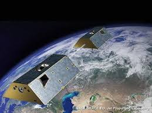

Interactive Google Earth API using LANDSAT 8 imaging.
LANDSAT 8
Landsat 8 (formally the Landsat Data Continuity Mission, LDCM) was launched on an Atlas-V rocket from Vandenberg Air Force Base, California on February 11, 2013.
Landsat 8 is the most recently launched Landsat satellite and carries the Operational Land Imager (OLI) and the Thermal Infrared Sensor (TIRS) instruments.
CALIPSO
The Cloud-Aerosol Lidar and Infrared Pathfinder Satellite Observation (CALIPSO) satellite provides new insight into the role that clouds and atmospheric aerosols play in regulating Earth's weather, climate, and air quality.
CALIPSO combines an active lidar instrument with passive infrared and visible imagers to probe the vertical structure and properties of thin clouds and aerosols over the globe.
GRACE-FO
GRACE Follow-On (GRACE-FO) is continuing GRACE’s legacy of tracking Earth’s water movement across the planet. Monitoring changes in ice sheets and glaciers, underground water storage, the amount of water in large lakes and rivers, and changes in sea level provides a unique view of Earth’s climate and has far-reaching benefits for its people.

OCO-2
OCO-2 – the Orbiting Carbon Observatory 2 is a NASA mission studying carbon dioxide in Earth’s atmosphere on a global scale. The mission will uncover the processes that control the distribution of carbon dioxide in the atmosphere, quantifying the sources that emit CO2 into the atmosphere and also study the sinks of carbon dioxide.
Terra
Terra is the flagship of NASA’s Earth Observing System. The satellite’s five instruments concurrently observe Earth’s atmosphere, ocean, land, snow and ice, providing insights into Earth systems such as the water, carbon and energy cycles. The MODIS and ASTER instruments onboard also provide critical information for assessing and managing natural disasters and other emergencies.
SWOT
Designed to make the first-ever global survey of Earth's surface water, the Surface Water and Ocean Topography, will survey at least 90 percent of the globe, studying Earth's lakes, rivers, reservoirs and oceans at least twice every 21 days to improve ocean circulation models, and weather and climate predictions, and aid in freshwater management around the world.